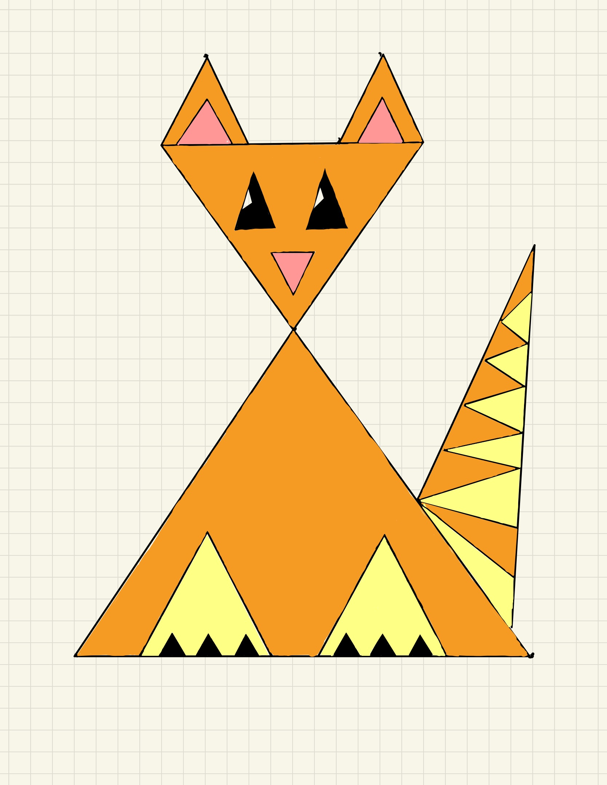

Yernar Smagulov (ysmagulo@ucsc.edu)
Grader notes: I did everything besides drawing the picture using webgl. For the html file, I completely changed the layout to my liking by organzing the color buttons, shape selection, and canvas clearing. I think it looks neat and more organized this way.
My drawing

XXX